Tor Hidden Services - Dark Web
At the beginning of the course, we mentioned that there are Tor hidden services that can only be accessed over the Tor network, and the web space where these services are located is called "Dark Web".
In this section, we will be discussing how to access websites on the dark web.
If you have prejudice about this services because of the dark web name, investigating the reason Tor hidden services born may change your mind.
The main purpose of the Tor organization from the very beginning; to ensure that people can use their right to communicate and receive information against all forms of oppression and censorship restricting freedom.


Thus, a free and highly secure publishing ecosystem has emerged for all publishers with restricted freedom, such as journalists under pressure.

When publishers want to publishing via the " Tor hidden service ", in other words, the " onion service ", they can publish the content they want anonymously without being dependent on any company for thing such as domain name registration.
Normally, when registering a domain name, the credentials required for registration must be shared with the registrar and a fee must be paid for registration. In order to register a domain name with the onion service, there is no need to provide identification information or to pay any fees. In this way, it provides free and anonymous publishing that can be accessed by everyone.You can even use your computer to host website files. In this way, you can freely publishing over the Tor network without having to share information with anyone for both domain name and host service.
As the clearest example of freely publishing, i can give example the Wikileaks documents moved over the " darknet ".

By looking at the previous explanations, you may have noticed that " Tor network " can also be called " darknet ". This is due to the notoriety of the Tor project, which we mentioned earlier. In other words , by using the expression " Dark " instead of " Tor ", the phrase " Dark Net " can be used instead of " Tor Network ". Similarly, the web space that you can reach with standard browsers without connecting to the Tor network can be called " Clear Net ", that is, " Open-Clean Network ".
If at this point you have a question about whether it is legal to browse and publishing on onion services, that is, dark websites, my answer will be the same as using the Tor network.
In other words, whether the use is legal or illegal is completely determined by the activities of the people. While legitimate content is not a problem, access to and publish of illegal content is criminalized. Although the anonymity of both sides allows people to circumvent the law temporarily, I would like to remind you once again that these security measures don't provide %100 security. There is a possibility that your real identity will be revealed when the necessary resources are allocated.
As the clearest example of this, i can give the caught of the founder of Silkroad, which has been publishing on the dark web for many years and is the biggest illegal trade site of its time, as a result of meticulous work.


Surfing in Onion Services
Since websites publishing on the onion service are located on the Tor network, you can only access such websites through tools such as the " Tor Browser " that can access the Tor network.


Once you are sure you have access to the Tor network, all you have to do is use the domain names of the website you want to go to. However, the domain names of websites in hidden services are often very difficult to keep in mind as they don't contain meaningful words.
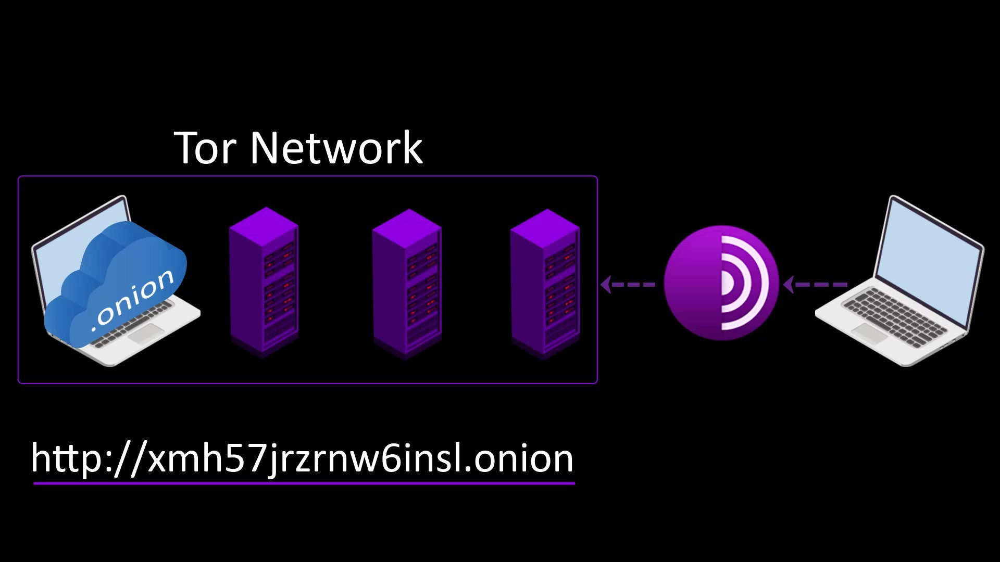
As such, you usually need to learn the address of the website you want to go to, using darknet search engines or lists shared by other users. Now let's talk about both darknet search engines and shared lists, respectively.Using Darknet Search Engine
You can't access the link addresses of websites on Darknet with search engines working for the surface web such as "Google", "Bing" or "Yandex".
Although not working as efficiently as "Google", "Bing" or "Yandex", there are also darknet-specific search engines that can search on the darknet and provide you with consistent results. However, it is worth mentioning that these search engines aren't as effective as the search engines you are used to. In other words, it would be better to see darknet search engines as tools that you can get help without keeping your expectations high.I added in this list the address information of all the search engines we talked during the lectures. If the address information in the list changes, if you inform me and the service is still working, I can add the new address information of the relevant search engine. Don't expect any services to provide uninterrupted service on Darknet, anyway. You should get used to the possibility that many websites will be closed frequently over time.
Ahmia.fi
Onion Service: juhanurmihxlp77nkq76byazcldy2hlmovfu2epvl5ankdibsot4csyd.onion
Thanks to this search engine, we can search the websites on Darknet via clearnet. The biggest advantage of this search engine is that it has an easy-to-remember domain name that also publish on clearnet. For example, when you don't have an address of any website, you can easily find the address information of many websites on the darknet through this web address. Even if you are not that satisfied with the results of this search engine, you can use this tool to find the address of another darknet search engine that you find useful. In short, you can use the Ahmia.fi search engine as an easy-to-remember and easy-to-access gateway to start surfing on the darknet.
Let's go to the address on clearnet to give an example of its usage. I go to its address on clearnet because it's easy to remember. I type ahmia.fi in my browser's address bar and confirm it.

As you can see, we have come across a very simple web page. Just enter the keywords of the website you want to find in the search bar and search. In addition, as you can see at the bottom, there is the onion service address of the search engine on the darknet, and you can use this address if you wish.
As I said before, I first visited its address on clearnet just because it is easy to remember. Now, to try it, let's search by typing the name of another search engine " Torch " in the search bar.As a result of my search, many links with the same name but different addresses have been listed. Unfortunately there is no sure way of knowing which of these are real and which are fake. All users can report the maliciously address if they are want. If the number of report is high, the address is removed from the list. However, don't rely too much on this feature, as the abuse reporting system works quite ineffective. To visit real addresses, you need to keep your own address list. This way you will have a safe list of addresses over time. You can use search engines for new discoveration. When you discover a new secure address, simply add it to your own address list.
Since I already know the address, I click the relevant link when I see the address.

Frankly, I don't find other search engines very useful compared to the ahmia.fi search engine. However, you can still experience various search engines and decide which one works better for you. For example, let's try the torch search engine.
Torch
Onion Service: http://xmh57jrknzkhv6y3ls3ubitzfqnkrwxhopf5aygthi7d6rplyvk3noyd.onionIt is a search engine that has been active for a long time and it claims to have researched over about 1 million documents. To test this engine, let's search another search engine "Torgle " this time .
As you can see, I couldn't reach the result I wanted to search for. Which didn't surprise me at all, because in my personal opinion, "Torch" can't use the excess number of addresses it has correctly. It's not very good at indexing addresses correctly. And it also contains a lot of advertisements. Although it is not my favorite, its wide address potential causes it to be preferred by many users. People often use the" Torch " search engine to discover new addresses rather than popular websites I wanted you to know because it is a frequently used search engine. Although it isn't my favorite search engine, you should definitely experience a little bit and make your own decision. I am not saying that it is absolutely useless, I just wanted to point out that it gives inefficient results for me according to my personal experience. Now let's do the same search again over ahmia.fi.
As you can see, many addresses have been listed. That's why the ahmia.fi search engine is my favorite search engine. I click because I know this is the correct address.Torgle

Unlike the others, this search engine also displays the page content of the websites in the listing stage. In this way, we can avoid unwanted web site visits to some extent. Let's search "Hidden wiki" to try it out . Hidden wiki is a useful web address that keeps a list of onion addresses. Later we will also be talking about the hidden wiki.

The results have been listed together with the images of the websites. I go to the link I am looking for from this list, with the help of the screenshot.
You can use this engine for links and new discoveries that you are often not sure about. Nevertheless, it isn't a engine that I prefer very often, as it contains too many ads and doesn't give results with high consistency.

We have dealt with a few basic and most frequently used search engines with their general use. The websites here may be shut down over time or replaced by different search engines. But don't worry, such situations won't be a problem for us, because in this section we will see how you can access addresses on the dark web without search engines. So, when necessary, you will be able to obtain the information of new search engines through alternatives. In addition, there are many darknet search engines other than the ones I mentioned here. You can search the keyword "search engine" in the current search engine to discover alternatives. I suggest you try out many services and discover which ones useful to you. The search engines I have covered are just the engines I have chosen to give you a starting point. Always be open to discoveration for more. and please search constantly.
Lists for Dark Web Addresses
In this lecture, we'll be talking about a few of the main list resources you can use. Of course, apart from the resources here, you can also get new addresses on various forums and blogs according to your interests. So please see these lists only as reference sources for a start.
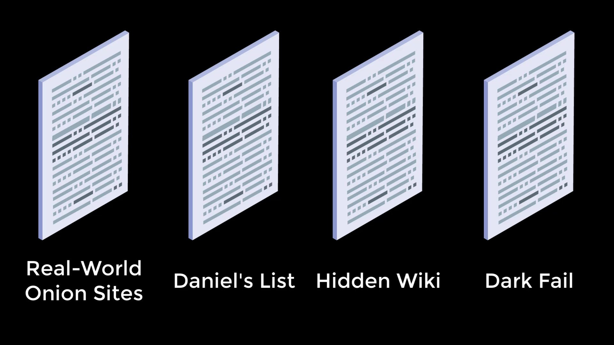
Real-World Onion Sites

This is a list of substantial, commercial-or-social-good mainstream websites which provide onion services.
https://github.com/alecmuffett/real-world-onion-sites
This list contains public address information that is voluntarily updated regularly. The address of many widely used websites in many categories is available here. As you can see, you can learn the onion address information of many popular services. If you want to browse these websites anonymously, the list here will help you access real onion address information.
If you want to contribute to this list, you can create new issue on issue tab to add new address or correct existing mistakes. You can also see that there are many addresses that have already been shared. You can too contribute to the project through your Github account.
Daniel's List
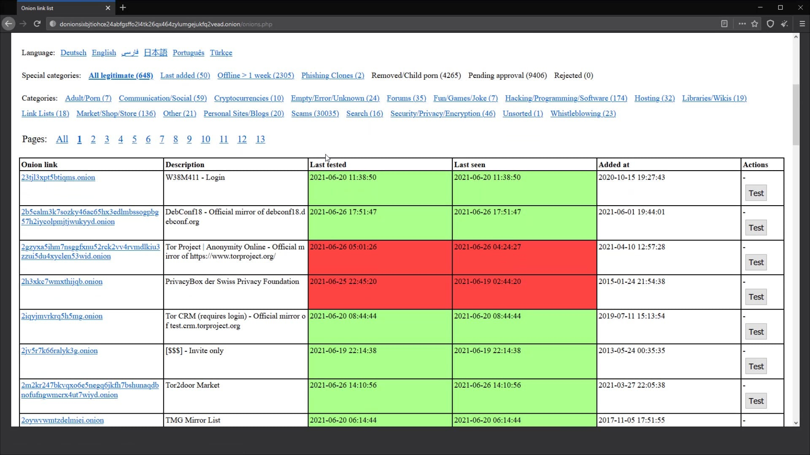
Daniel's list is an useful resource to help you discover various onion service links. I think this list really helpful compared to its alternatives. This website lists a lot of onion links which are categorized to make browsing easier. Moreover, it has a very useful built-in functionality which lets you know whether a particular website is online.
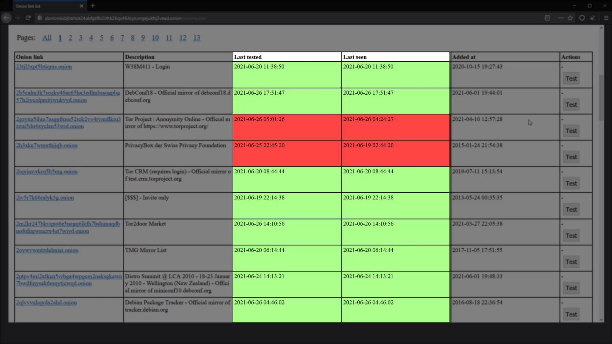
This is very useful, as it means you don’t need to click and load every dark web link listed to see if it’s working. Especially with the potentially long loading times of the Tor browser, this is a great feature. To see how many addresses are on the list, just take a look at it. If necessary, you can also search website you want from the search bar here. For example, when I do search "mail", email services are listed as you can see.
Onion Service: http://danielas3rtn54uwmofdo3x2bsdifr47huasnmbgqzfrec5ubupvtpid.onion/
Hidden Wiki
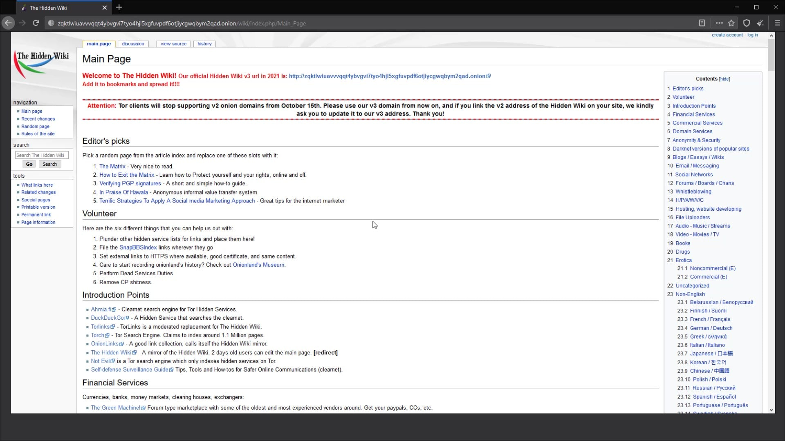
You can use the " hidden wiki " resource for the main link addresses that are categorized .
Onion Service: http://zqktlwiuavvvqqt4ybvgvi7tyo4hjl5xgfuvpdf6otjiycgwqbym2qad.onion/
Although most of the websites in this list have up-to-date address information, it may be that some links don't work for various reasons. Nevertheless, we can say that it is the source that provides the most information among the alternatives.
Also, please be aware that the addresses listed may not be legal or secure.

Dark Fail
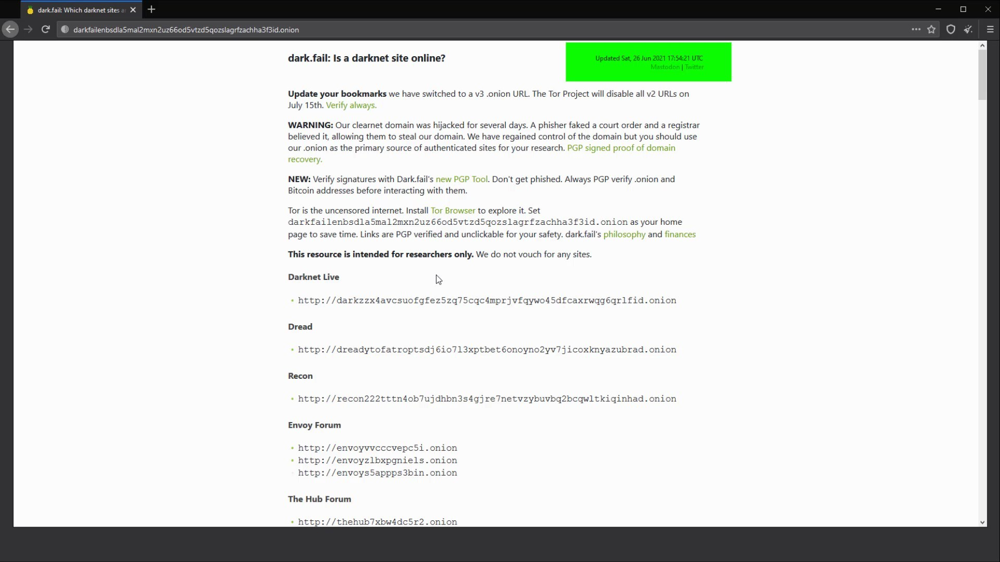
After the hidden wiki resource, this is the most preferred list. Moreover, since it is updated frequently, it provides much more up-to-date address information compared to hidden wiki resources. You can also use this website to confirm the addresses on the hidden wiki when necessary. You can test real web addresses with this simple comparison, as fake or outdated address information won't be the same in two lists.
Onion Service: darkfailenbsdla5mal2mxn2uz66od5vtzd5qozslagrfzachha3f3id.onion
Apart from these addresses, you can also browse lists shared by people from platforms such as Reddit and add links to your own list if they are the kind of addresses you will often use.
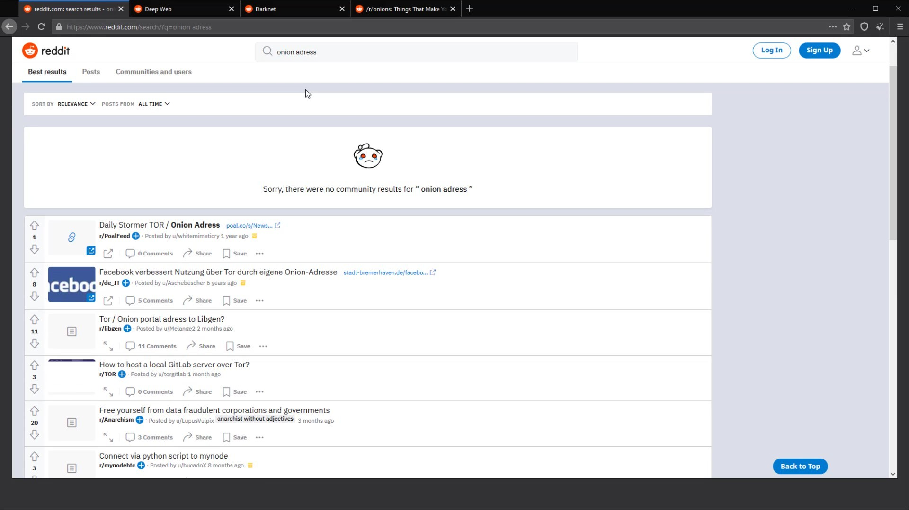
There are many information sharing channels about onion services on Reddit. If you haven't used Reddit before, you can see how easy it is to use with a short glance and use it as a resource you will benefit from.
You can access a lot of address information by using the search bar on the Reddit platform or by joining communities such as " Deep Web ", " Darknet " and " Onions ".

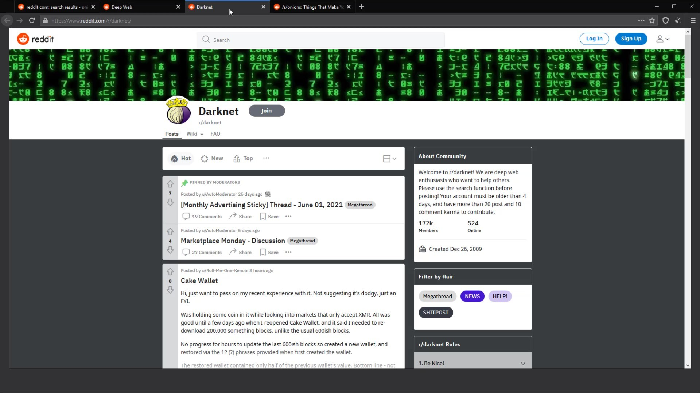

You can also get new addresses in many different ways, apart from platforms like "Reddit" and "Hidden Wiki". However, unfortunately, due to tor's security architecture, it is not possible to find a resource where everything is collected in one area. Anyway, tor doesn't want all onion addresses to be easily exposed, so it uses long and complex character domains. So the reason why onion addresses are hard to find is purely for security reasons.
According to your interests, you need to discover these web addresses by yourself over time and write them in your address list.

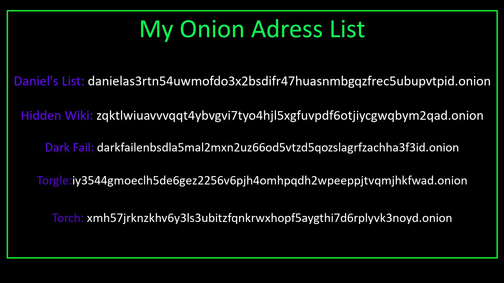
However, you may need to update your list frequently due to changing addresses and unprofessional interrupted services on the dark web. This is one of the main reasons why browsing on the dark web is cumbersome.About ".onion" Addresses with Meaningful and Meaningless
While browsing the Tor hidden services, we witnessed that, with some exceptions, many onion services have domains with full meaningless characters.
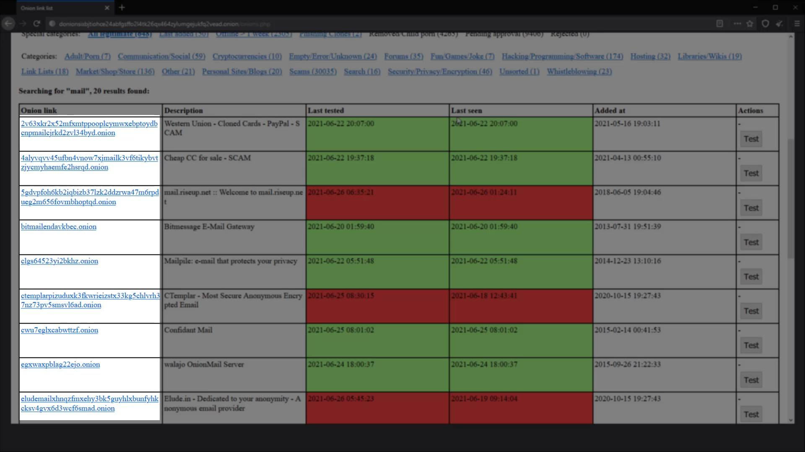
What is the reason for the existence of both meaningful and meaningless domain names and the imbalance in their number of character length?In fact, normally, these domain names are randomly generated by applying the method determined by the Tor service, depending on security reasons.

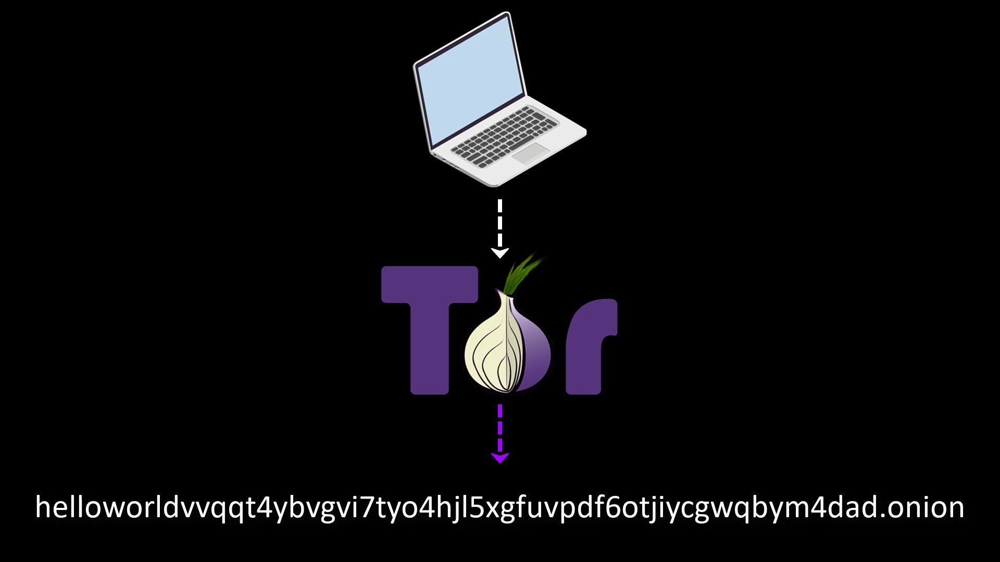
However, since this number of retries requires very high processing power, it isn't an operation that everyone can do. You can see how much processing power it may require by looking at the list.The average time calculation of how long it will take to create the desired characters using a 1.5 GHz processor is as in the list.

It's also unreasonable to try to produce a fully meaningful domain name as the tor developer has increased the domain length from 16 characters to 56 characters in the new version.

We explained the reason for meaningful and meaningless domain names. Now let's explain the reason for difference character lengths in domain names.
For security reasons, onion domain names are produced with a complexity and length that cannot be found by fuzzing methods. If you are curious about the technical details of this topic, you can read the official documentation from the link in the lecture resources.
Domain names with 16 characters are referred to as V2, while domain names with 56 characters are referred to as V3.

Although V3 is recommended by Tor as it provides an extra security measure compared to the old one, it is possible to use the old addressing system, namely the V2 system. But, Tor developers have announced that they won't support v2 from the "October 15th, 2021" release.

Bonus: How to Create Your Onion Site on Tor ?
In this lecture, I would like to briefly show for those who are curious how they can create their own onion websites on the Tor. I said for those who are curious, but since I will refer to what I will tell in this lecture in the future, I strongly recommend that everyone follow the lecture here.
In this lecture, I will only show you how to use your computer as a host. But of course, your website won't be accessible when your computer is turned off, as the host, that is, hosting site files, will be your computer. If you want to establish a constantly active website, you can rent a server and have it hosting 7/24 via this server. You can also use of hosting services that offer services over darknet. Since the installation process will be similar in any case, I will show you how you can host on your computer so that everyone can test it and see how the structure works. Since the professional website setup and details will be outside of the this course curriculum, I will only be discussing hosting a simple web page. In other words, you need to have the necessary infrastructure in order to set up a website that offers a comprehensive service. Here we will be covering the basics of onion service hosting to get an idea of how the system works.
I will be doing the explanations over "Windows" as they are more widely used. Nevertheless, the tools I will use during the lecture are those that can be used in common on "Linux" and "Mac" operating systems. In other words, you can easily follow the steps on the operating system you are using.
First of all, to use your computer as a server, you need to download and install the XAMPP tool that helps you create a local web server .
Let's visit the website to download tool. From here you should download the setup file suitable for your system. Since I am using Windows, I am downloading the setup file for windows.

After downloading setup file, let's run setup and complete installation steps. I am not talking about the installation details as all the installation steps are very easy and standard all systems. You can easily complete installation steps.
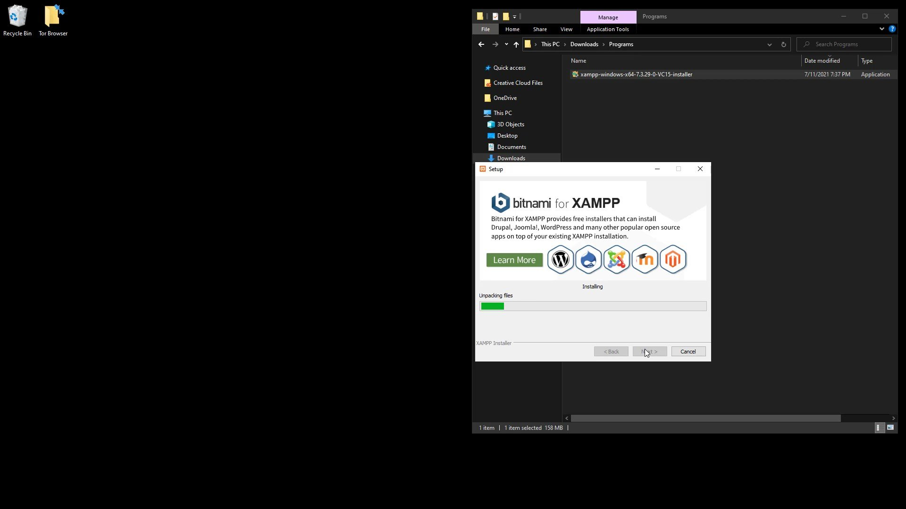
After completing the installation steps, let's run the application. When the application opens, click the "Start" button to start the "Apache" service.
After the service is started, click the " Explorer " button to add the files of your website to the required location .
Now you should go into the " htdocs " folder and add the files of your website after deleting the files here.

After adding the files, go back to the application and click the "Admin" button to test the website.
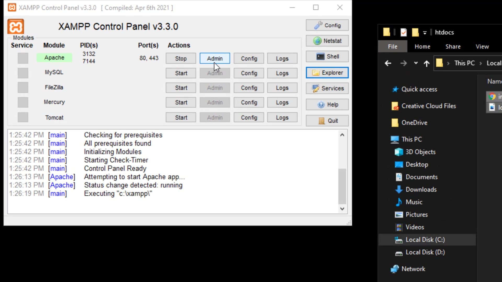
From the page that opens, you can see that you have managed to host your website locally.

Now you need to make a few adjustments to get this site, which you have hosted locally, on the Tor network.
First, let's switch to Tor Browser >> Browser >> TorBrowser >> Data >> Tor folders.

The file location is similar on Linux and Mac systems. You can easily access the " torrc " file by going to the location where you installed the Tor browser .
Let's come to the bottom line of the opened file and specify the hidden service directory of your website and the address of your local server.
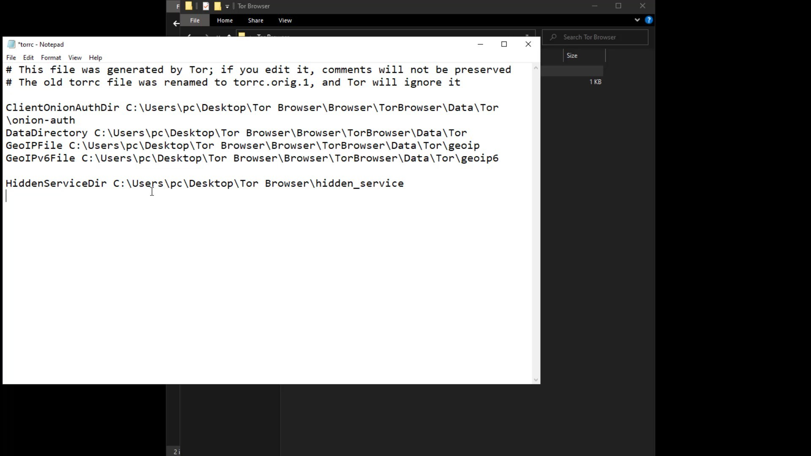
In the first line, you need to specify the location where the configuration files of the your onion service will be located. I specify that it should be saved in a folder called hidden_service in the tor browser folder.
As the service port, I specify port 80 in the local network as indicated by the XAMPP tool. Since I am currently hosting the website on the local network and port 80, I enter the address information in this way.
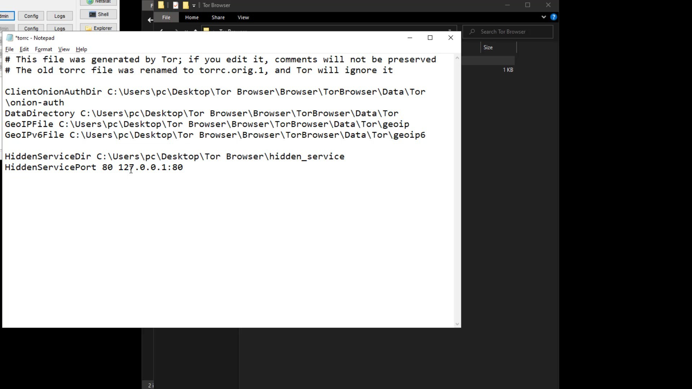
After entering the required information, save and close your file. Now all you have to do is run the Tor browser to generate the domain name. As soon as you run the browser, the " hidden_service " folder that you have specified will be created automatically and your file containing the information of the domain name will be produced.

Let's right click on the " hostname " file in the directory and open it with the help of any text editor.
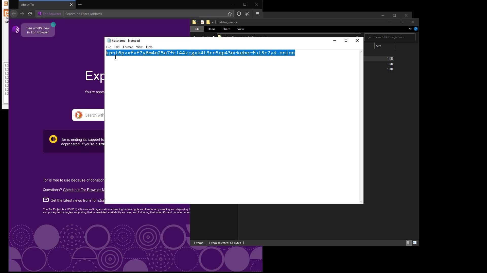
Here, the domain name created for me is the address in this file. Let's try to access this address through the Tor browser to try it right away. After a short while, i can see that the web page i have hosted has come across.

Thus, you have succeeded in create your onion site on Tor. So now you have a "Dark Web" site. But let me remind you again, since you host the website on your computer, the website cannot be accessible while your computer is turned off.


Free Anonymity & Privacy Course on Youtube
You can click on this card to access the free youtube playlist of the tutorial series. Please note that this tutorial series is introductory training only. This free tutorial series will only provide you with an introductory knowledge of anonymity and privacy.